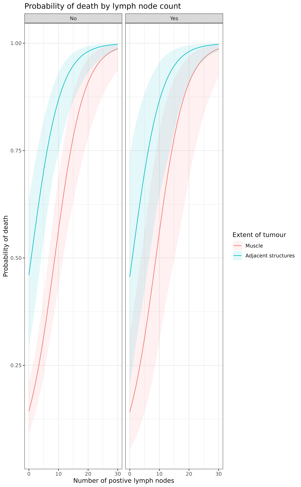

Generate model predictions against a specified set of explanatory levels with
bootstrapped confidence intervals. Add a comparison by difference or ratio of
the first row of newdata with all subsequent rows.
boot_predict(
fit,
newdata,
type = "response",
R = 100,
estimate_name = NULL,
confint_sep = " to ",
condense = TRUE,
boot_compare = TRUE,
compare_name = NULL,
comparison = "difference",
ref_symbol = "-",
digits = c(2, 3)
)Dataframe usually generated with
finalfit_newdata.
the type of prediction required, see
predict.glm. The default for glm models is on the
scale of the response variable. Thus for a binomial model the default
predictions are predicted probabilities.
Number of simulations. Note default R=100 is very low.
Name to be given to prediction variable y-hat.
String separating lower and upper confidence interval
Logical. FALSE gives numeric values, usually for plotting. TRUE gives table for final output.
Include a comparison with the first row of newdata
with all subsequent rows. See boot_compare.
Name to be given to comparison metric.
Either "difference" or "ratio".
Reference level symbol
Rounding for estimate values and p-values, default c(2,3).
A dataframe of predicted values and confidence intervals, with the
option of including a comparison of difference between first row and all
subsequent rows of newdata.
To use this, first generate newdata for specified levels of
explanatory variables using finalfit_newdata. Pass model
objects from lm, glm, lmmulti, and
glmmulti. The comparison metrics are made on individual
bootstrap samples distribution returned as a mean with confidence intervals.
A p-value is generated on the proportion of values on the other side of the
null from the mean, e.g. for a ratio greater than 1.0, p is the number of
bootstrapped predictions under 1.0, multiplied by two so is two-sided.
/codefinalfit predict functions
library(finalfit)
library(dplyr)
#>
#> Attaching package: ‘dplyr’
#> The following objects are masked from ‘package:stats’:
#>
#> filter, lag
#> The following objects are masked from ‘package:base’:
#>
#> intersect, setdiff, setequal, union
# Predict probability of death across combinations of factor levels
explanatory = c("age.factor", "extent.factor", "perfor.factor")
dependent = 'mort_5yr'
# Generate combination of factor levels
colon_s %>%
finalfit_newdata(explanatory = explanatory, newdata = list(
c("<40 years", "Submucosa", "No"),
c("<40 years", "Submucosa", "Yes"),
c("<40 years", "Adjacent structures", "No"),
c("<40 years", "Adjacent structures", "Yes")
)) -> newdata
# Run simulation
colon_s %>%
glmmulti(dependent, explanatory) %>%
boot_predict(newdata, estimate_name = "Predicted probability of death",
compare_name = "Absolute risk difference", R=100, digits = c(2,3))
#> Age Extent of spread Perforation Predicted probability of death
#> 1 <40 years Submucosa No 0.28 (0.07 to 0.50)
#> 2 <40 years Submucosa Yes 0.29 (0.06 to 0.57)
#> 3 <40 years Adjacent structures No 0.71 (0.52 to 0.89)
#> 4 <40 years Adjacent structures Yes 0.72 (0.44 to 0.91)
#> Absolute risk difference
#> 1 -
#> 2 -0.00 (-0.16 to 0.18, p=0.940)
#> 3 0.45 (0.21 to 0.66, p<0.001)
#> 4 0.43 (0.11 to 0.71, p=0.020)
# Plotting
explanatory = c("nodes", "extent.factor", "perfor.factor")
colon_s %>%
finalfit_newdata(explanatory = explanatory, rowwise = FALSE, newdata = list(
rep(seq(0, 30), 4),
c(rep("Muscle", 62), rep("Adjacent structures", 62)),
c(rep("No", 31), rep("Yes", 31), rep("No", 31), rep("Yes", 31))
)) -> newdata
colon_s %>%
glmmulti(dependent, explanatory) %>%
boot_predict(newdata, boot_compare = FALSE, R=100, condense=FALSE) -> plot
library(ggplot2)
theme_set(theme_bw())
plot %>%
ggplot(aes(x = nodes, y = estimate, ymin = estimate_conf.low,
ymax = estimate_conf.high, fill=extent.factor))+
geom_line(aes(colour = extent.factor))+
geom_ribbon(alpha=0.1)+
facet_grid(.~perfor.factor)+
xlab("Number of postive lymph nodes")+
ylab("Probability of death")+
labs(fill = "Extent of tumour", colour = "Extent of tumour")+
ggtitle("Probability of death by lymph node count")
#> Warning: Combining variables of class <labelled> and <factor> was deprecated in ggplot2
#> 3.4.0.
#> ℹ Please ensure your variables are compatible before plotting (location:
#> `join_keys()`)
